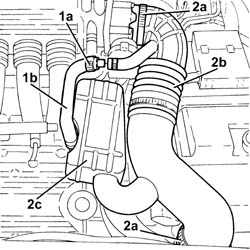
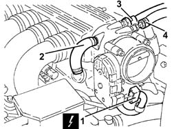
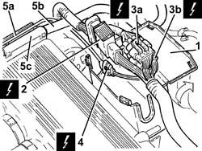
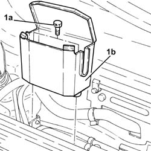
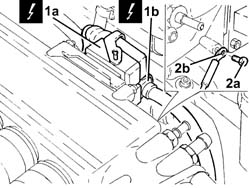
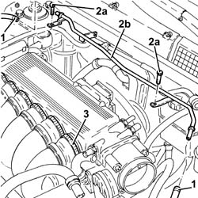
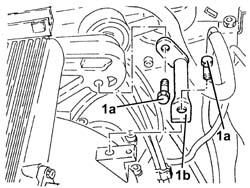
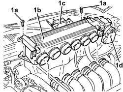

1072B50 SLEEVES CONNECTING AIR CAPACITY BOX TO INLET MANIFOLD IS - R+R
- Path
- Procedures > 10 ENGINE UNIT > 1072 INLET AND EXHAUST MANIFOLDS > 1072B INLET MANIFOLDS > 1072B50 SLEEVES CONNECTING AIR CAPACITY BOX TO INLET MANIFOLD IS - R+R
- Kind
- repair procedure (removal / refitting; the operation number is the code)
- Applies to
- engines: 3.2 V6; all production periods
- Interactive page
- https://sloeber94.github.io/elrnDB-aGt/en/#/125001078
Applies to: engines: 3.2 V6; all production periods
 Removing
Removing
 Refitting
RefittingMake sure that the ignition key is in the OFF position. then disconnect the battery negative (-) terminal.
Name | Connector | |
|---|---|---|
- | Battery | See A1B BATTERY ( BATTERY NEGATIVE ) |
1. Loosen the band (1a) and disconnect the oil vapour recirculation pipe (1b) from the corrugated hose.
2. Loosen the bands (2a) and remove the corrugated hose (2b), complete with resonator (2c).

Applies to: engines: 3.2 V6; all production periods
1. Disconnect the electrical connection from the throttle body integrated with the D.V.L.
Name | Connector | |
|---|---|---|
1 | Throttle body actuator | See N75 THROTTLE BODY ACTUATOR ( CONNECTORS ) |
2. Loosen the band and disconnect the oil vapour recovery pipe from the air chamber.
3. Disconnect the rapid connector for the fuel vapour recirculation pipe from the air chamber.
4. Loosen the band and disconnect the brake servo vacuum intake pipe from the air chamber.

Applies to: engines: 3.2 V6; all production periods
1. Open the electrical connections box cover.
2. Disconnect the engine coupling.
3. Disconnect the electrical connections (3a) and (3b) for the rear Lambda sensors and the catalytic converter.
Name | Connector | |
|---|---|---|
3a | Lambda sensor on catalyzer | See K17 LAMBDA SENSOR ON CATALYZER ( CONNECTORS ) |
Name | Connector | |
|---|---|---|
3b | Lambda sensor on catalyzer 2 | See K18 LAMBDA SENSOR ON CATALYZER 2 ( CONNECTORS ) |
4. Disconnect the electrical connection for the detonation sensor, timing side.
Name | Connector | |
|---|---|---|
4 | Detonation sensor 1 | See K50 DETONATION SENSOR 1 ( CONNECTORS ) |
5. Release the electrical wiring for the timing side detonation sensor (5a) and the fuel supply pipe (5b) from the cable duct (5c).

Applies to: engines: 3.2 V6; all production periods
1. Undo the bolts (1a) and remove the electrical connections box (1b).

Applies to: engines: 3.2 V6; all production periods
1. Disconnect the electrical connections (1a) and (1b) from the injection/ignition system control unit.
Name | Connector | |
|---|---|---|
1a | Engine management control unit | See M10A ENGINE MANAGEMENT CONTROL UNIT ( FRONT ) |
Name | Connector | |
|---|---|---|
1b | Engine management control unit | See M10B ENGINE MANAGEMENT CONTROL UNIT ( CONNECTORS ) |
2. Undo nut (2a) and disconnect earth lead (2b) from the air chamber.

Applies to: engines: 3.2 V6; all production periods
1. Loosen the bands and disconnect the flexible pipes from the engine coolant reservoir rigid coolant return pipe.
2. Undo the bolts (2a) and remove the engine coolant reservoir rigid coolant return pipe (2b).
3. Loosen the bands fixing the inlet ducts to the air chamber.

Applies to: engines: 3.2 V6; all production periods
1. Undo the bolts (1a) and remove the reinforcement (1b) between the air chamber and bracket on the engine for the reaction link.

Applies to: engines: 3.2 V6; all production periods
1. Undo the bolts (1a) and remove the air chamber (1b) complete with injection/ignition system control unit (1c) and throttle body integrated with D.V.L. (1d).

Applies to: engines: 3.2 V6; all production periods
Refitting
RemovingPlace the air chamber complee with injection/ignition system control unit and throttle casing integrated with D.V.L back in its housing and fasten it using the bolts.
Refit in its seating the reinforcement between the air chamber and bracket on the engine for the reaction link and secure it with its bolts.
Tighten the bands fixing the inlet ducts to the air chamber.
Place the coolant rigid return pipe to the engine cooling system reservoir back in its housing and fix it using the bolts.
Connect the flexible pipes to the engine coolant reservoir rigid coolant return pipe and tighten the bands.
Connect the earth lead to the air chamber and secure it using the bolts.
Connect the electrical connections to the fuel injection/ignition control unit.
Place the electrical connections box back in its housing and secure it using the bolts.
Fasten the electrical wiring for the timing side detonation sensor and the fuel supply pipe to the cable duct.
Connect the electrical connection for the detonation sensor, timing side.
Connect the electrical connections for the rear Lambda sensors to the catalytic converter.
Connect the engine junction.
Close the electrical connections box cover.
Connect the brake servo vacuum intake pipe to the air chamber and tighten the band.
Connect the rapid connector for the fuel vapour recirculation pipe to the air chamber.
Connect the oil vapour recovery pipe to the air chamber and tighten the band.
Connect the electrical connection to the throttle body integrated with the D.V.L.
Place the corrugated hose, complete with resonator, back in its housing and tighten the bands.
Connect the oil vapour recirculation pipe to the corrugated hose and tighten the band.
Connect the negative (-) battery terminal
Topics that link to this page (26)
- 1008C14 ENGINE LINK BRACKET - R R
- 1016A34 RIGHT-HAND CAM COVER - R + R AND REPLACE GASKET
- 1016A36 LEFT HAND AND RIGHT HAND CAM COVER - R+R
- 1016A46 CYLINDER HEAD IGNITION COIL COVERS - R+R
- 1016D20 LEFT CYLINDER HEAD – R.R. AND REPLACING GASKET
- 1016D24 RIGHT CYLINDER HEAD - R.R. AND GASKET REPLACING
- 1020D12 FRONT CRANK SHAFT OIL SEAL COVER - R + R AND REPLACE SEALS
- 1020D18 FRONT CRANK SHAFT COVER OIL SEAL - REPLACE
- 1032B10 TOOTHED TIMING BELT - R + R FOR TIMING ADJUSTMENT OR REPLACEMENT
- 1032B46 TOOTHED DRIVE PULLEY - R + R
- 1032B54 LEFT CYLINDER HEAD DRIVEN TOOTHED PULLEYS - R.R.
- 1032B58 RIGHT CYLINDER HEAD DRIVEN TOOTHED PULLEYS - R.R.
- 1032C18 MOBILE TIMING SYSTEM TENSIONER - R + R FOR 24 VALVE ENGINES
- 1032C32 FIXED TIMING SYSTEM TENSIONER (ONE) R + R
- 1036E10 LEFT CYLINDER HEAD TIMING SYSTEM SHAFTS - R.R. ON CAR
- 1036E14 RIGHT CYLINDER HEAD TIMING SYSTEM SHAFTS - R.R. ON CAR
- 1036E18 <x>RH&LH CYLINDER HEAD TIMING SYSTEM SHAFTS -R.R. ON CAR </x>
- 1036E50 FRONT OIL SEALS OF L/H OR R/H OVERHEAD CAMSHAFT - REPLACE
- 1036E54 FRONT OIL SEALS OF L/H OVERHEAD CAMSHAFT - REPLACE
- 1036E58 FRONT OIL SEAL OF R/H OVERHEAD CAMSHAFTS - REPLACE
- 1056B90 SYSTEM CABLE BUNDLE - R + R
- 1072B54 SLEEVES CONNECTING AIR CAPACITY BOX TO INLET MANIFOLD IS - R+R
- 1084B23 OIL PUMP CONTROL RETURN - R R
- 1088C10 WATER PUMP - R + R
- 5510C18 RIGHT HAND CYLINDER HEAD IGNITION COIL - R+R
- 5510D10 SPARK PLUGS - R+R